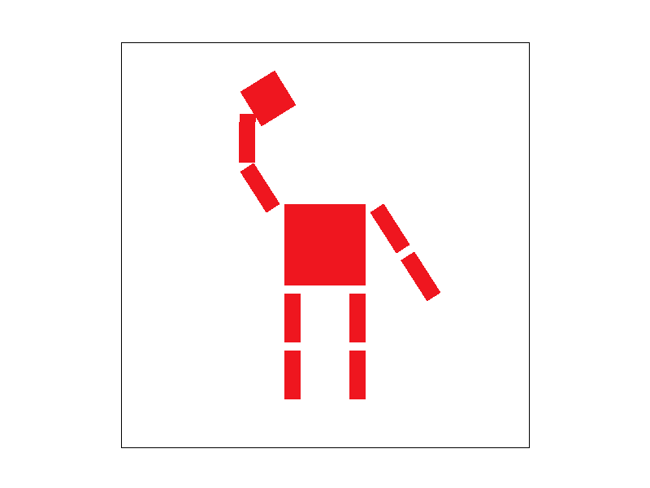
In this homework, we built a complete software rendering pipeline from scratch. Our rasterizer translates mathematical geometry into screen pixels, supporting basic triangle rasterization, supersampled anti-aliasing, and texture mapping. We also implemented 2D transformation matrices, bringing our pipeline to life by modeling a custom hierarchical robot named Louis!
Overall, we took away from this project:
We learned to understand and apply graphics and rendering techniques like supersampling, barycentric coordinates for color interpolation, bilinear pixel sampling, and mipmapping, on both a theoretical and implementation level.
We familiarised working and debugging in C++, and working with graphics related libraries and data classes like Vector2D and Color. We familiarised with accessing and managing frame and sample buffers.
Overall, this project was a super rewarding deep dive into the fundamental principles of modern rasterization!
To rasterize a triangle, we first constructed a helper function called inside, which checks whether the center of a
pixel lies inside the triangle defined by three points (x0, y0), (x1, y1),
and (x2, y2).
In inside, we defined edge functions based on 2D cross products. For each edge of the triangle, we compute 2D cross product between the edge vector and the
vector from the edge’s starting vertex to the test point as following:
e0 = (px − x0) * (y1 − y0) − (py − y0) * (x1 − x0)e1 = (px − x1) * (y2 − y1) − (py − y1) * (x2 − x1)e2 = (px − x2) * (y0 − y2) − (py − y2) * (x0 − x2)inside returned true.
Now that we have a way to check if a pixel is inside/outside of a triangle, we can now iterate through each pixel on the screen,
and apply the colours! In rasterize_triangle, we looped through every pixel (using px, py) on the
grid, and called inside on the pixel centers by passing in (px + 0.5, py + 0.5). If
inside returned true, we colored the pixel by storing the specified color in the sample_buffer.
Finally, we display the sample_buffer image by calling RasterizerImp::resolve_to_framebuffer() to save it to the frame buffer.
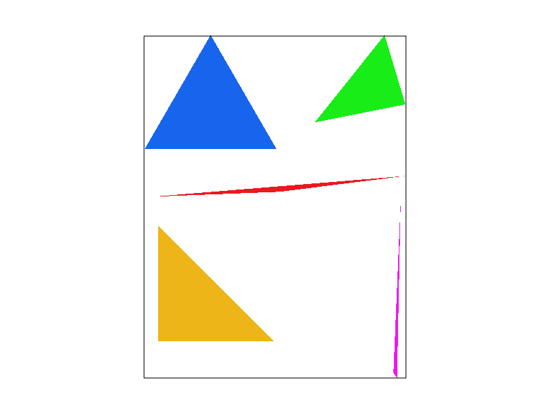
While our rasterisation loop works, it was quite slow. The code checks through every pixel on the screen, even those that are definitely outside the triangle!
To speed this up, we implemented a bounding box optimization. We computed the axis-aligned bounding box of the triangle by finding the minimum and maximum x and y coordinates among the three vertices. Then, instead of iterating through every pixel on the screen, we only looped through pixels that fall within this bounding box:
int triangle_lower_x = floor(min(x0, min(x1, x2)));
int triangle_upper_x = ceil(max(x0, max(x1, x2)));
int triangle_lower_y = floor(min(y0, min(y1, y2)));
int triangle_upper_y = ceil(max(y0, max(y1, y2)));
for (int px = triangle_lower_x; px < triangle_upper_x; px++) {
for (int py = triangle_lower_y; py < triangle_upper_y; py++) {
// rest of the code...
}
}
To test if our optimisation worked, we ran the rasterizer at different sample rates on test6.svg, and recorded the rendering times:
Without Speedup:
With Speedup:
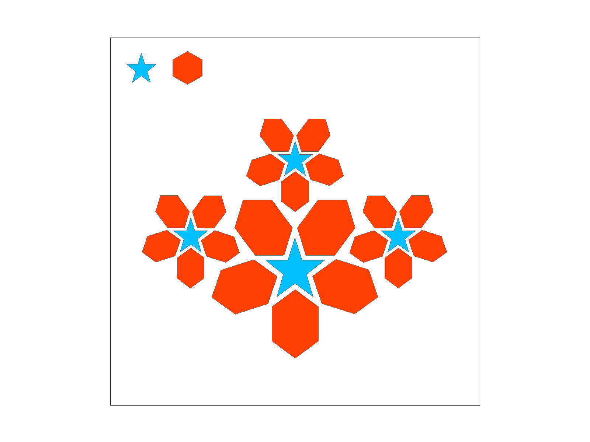
For Task 2, during the iteration through each pixel, we added another 2D for-loop to iterate through the subpixels (samples) within that pixel. To do this, we scaled the starting subpixel coordinates by sqrt(sample_rate) and incremented by 1 for each subpixel step.
Similar to Task 1, we checked whether the center of each subpixel (px_sub+0.5, py_sub+0.5) was inside the triangle using the inside helper function.
As a bonus for the +1 extra credits, we implemented a jittered sampling technique by tweaking the +0.5 offsets with a randomly-generated offset:
float x_offset = (float)rand() / RAND_MAX;float y_offset = (float)rand() / RAND_MAX;
To create a color gradient, we implemented a counter count to track how many subpixels within each pixel were inside the triangle. We then computed the average color using the following formula:
Color ave_color = (color * count + Color::White * (sample_rate - count)) * (1.0f / sample_rate);
Lastly, we checked whether the resulting average color was within the valid range for Color, and then assigned it to the pixel using:
rasterize_point(px, py, ave_color);sampling_rate = 1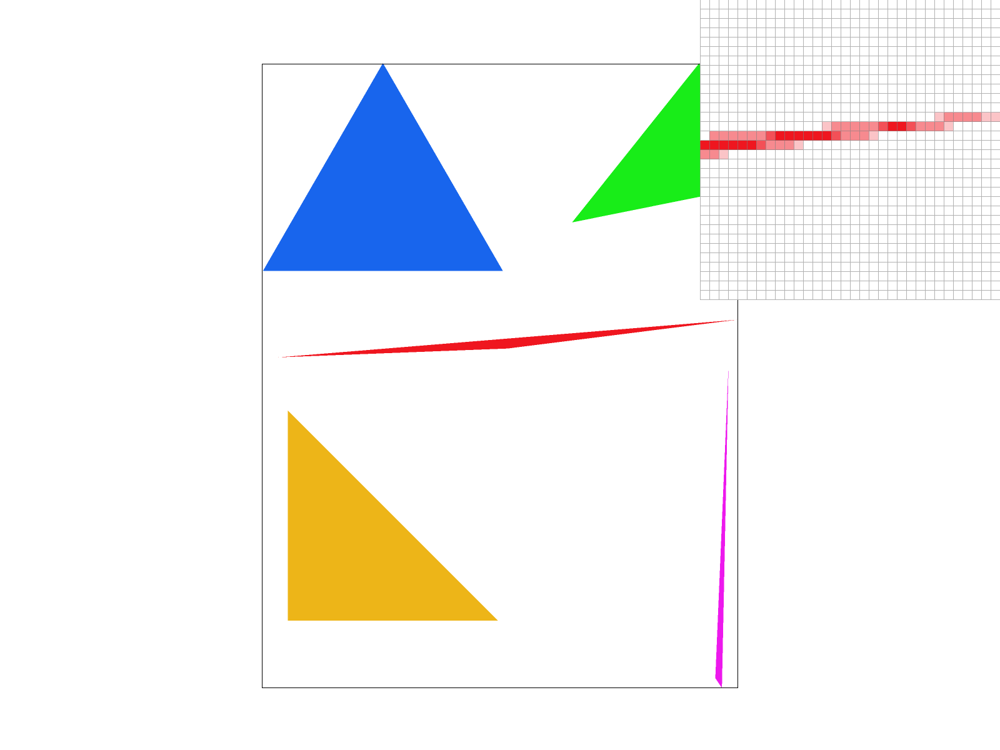
sampling_rate = 4sampling_rate = 16RasterizerImp::rasterize_triangle. To do so, for each triangle, we
generate a random sampling offset for each pixel:
auto get_jitter = [](int px, int py, int i, int j, int axis) -> float {
// Scramble the inputs. 'axis' ensures x and y get different random numbers.
uint32_t n = px * 11 + py * 57 + i * 131 + j * 313 + axis * 1023;
n = (n << 13) ^ n;
n = n * (n * n * 15731 + 789221) + 1376312589;
// Mask and divide to get a float between 0.0 and 1.0
return (n & 0x0fffffff) / float(0x0fffffff);
};
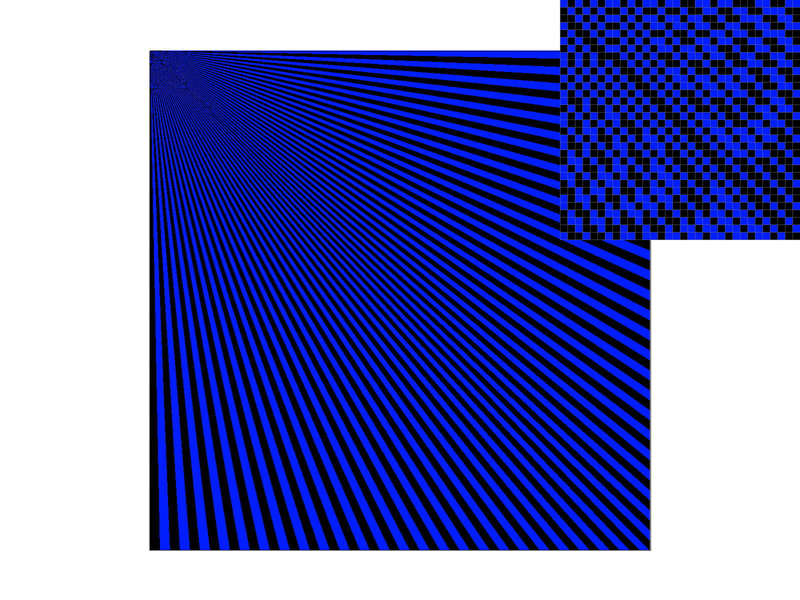
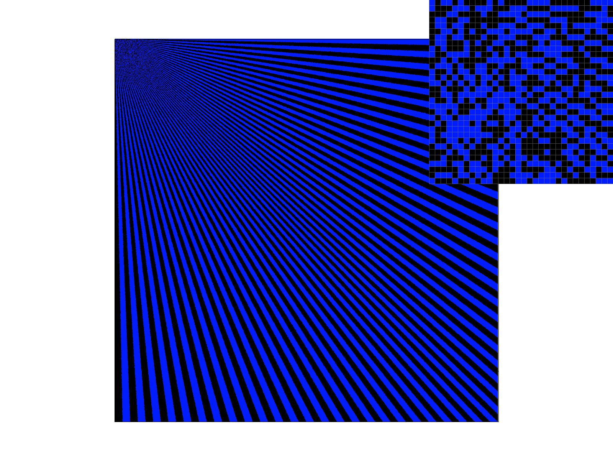
For Task 3, we implemented 3×3 transformation matrices for translate, scale, and rotate.
For translation, we output a matrix that places the horizontal shift tx and vertical shift ty in the third column. This makes the transformation follow:
output_x = input_x + txoutput_y = input_y + tyFor scaling, we output a diagonal matrix with sx and sy along the diagonal so that the transformation satisfies:
output_x = input_x * sxoutput_y = input_y * syLastly, for rotation, we output a matrix using the trigonometric values of the rotation angle deg. This rotates each point using the standard linear combination:
output_x = input_x * cos(deg) - input_y * sin(deg)output_y = input_x * sin(deg) + input_y * cos(deg)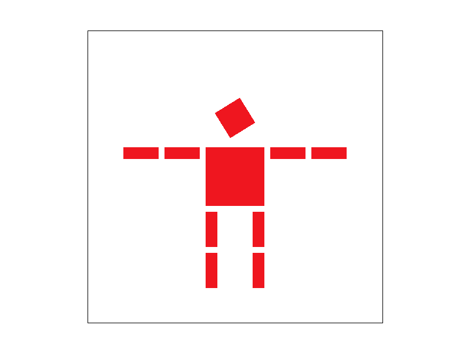
For Task 4, we implemented rasterize_interpolated_color_triangle. First, we looped through every pixel (px, py) and computed the barycentric coordinates alpha, beta, and gamma using the triangle’s three vertices following this equation:
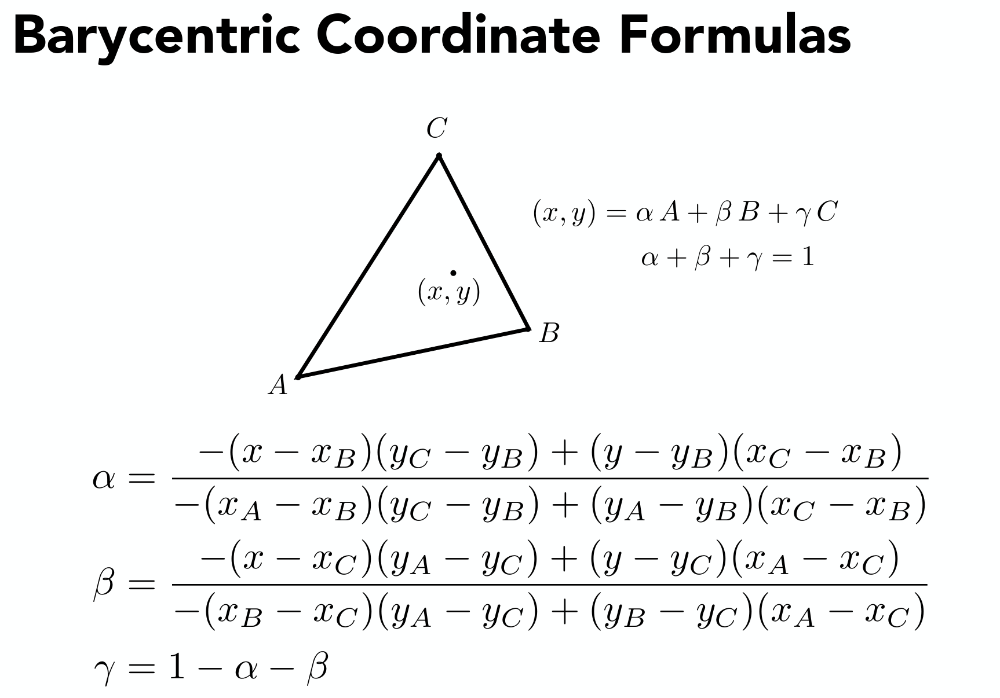
Then, using these barycentric coordinates, we computed the interpolated color at the pixel by taking a weighted sum of the three vertex colors:
color = alpha * c0 + beta * c1 + gamma * c2
After getting color, we scaled its gradient using the same method as supersampling we discussed in task 2 and rasterized each pixel using rasterize_point(px, py, ave_color).
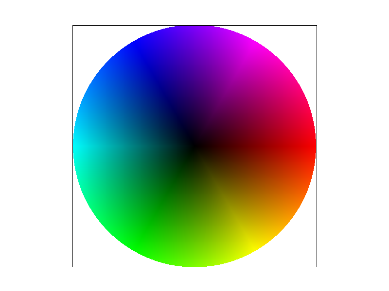
For Task 5, we implemented rasterize_textured_triangle to rasterize a triangle using a texture map.
First, we looped through each pixel on the screen and checked whether the pixel lies inside the triangle using the inside function from earlier tasks. If the pixel was inside, we computed its barycentric coordinates alpha, beta, and gamma. Using these values, we interpolated the corresponding (u, v) coordinate on the texture map:
u = alpha * u0 + beta * u1 + gamma * u2v = alpha * v0 + beta * v1 + gamma * v2
Next, we sampled the texture at this interpolated (u, v) location. To do this, we filled in a SampleParams struct. We set p_uv to the interpolated (u, v), and we approximated the texture derivatives dudx, dvdx, dudy, dvdy to support mipmapping and level selection:
p_dx_uv = (dudx, dvdx)p_dy_uv = (dudy, dvdy)
In our implementation, we supported both sample_nearest and sample_bilinear. For nearest sampling, we mapped (u, v) to texture coordinates and returned the closest texel. For bilinear sampling, we sampled the four surrounding texels and linearly interpolated between them to produce a smoother result. Finally, after sampling the texture to get tex_color, we rasterized the triangle using that sampled color.
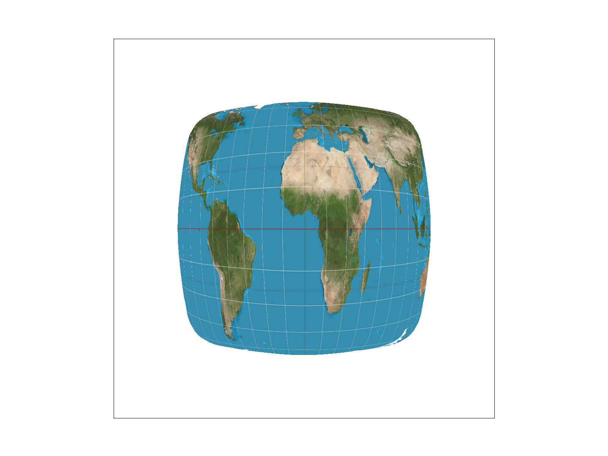
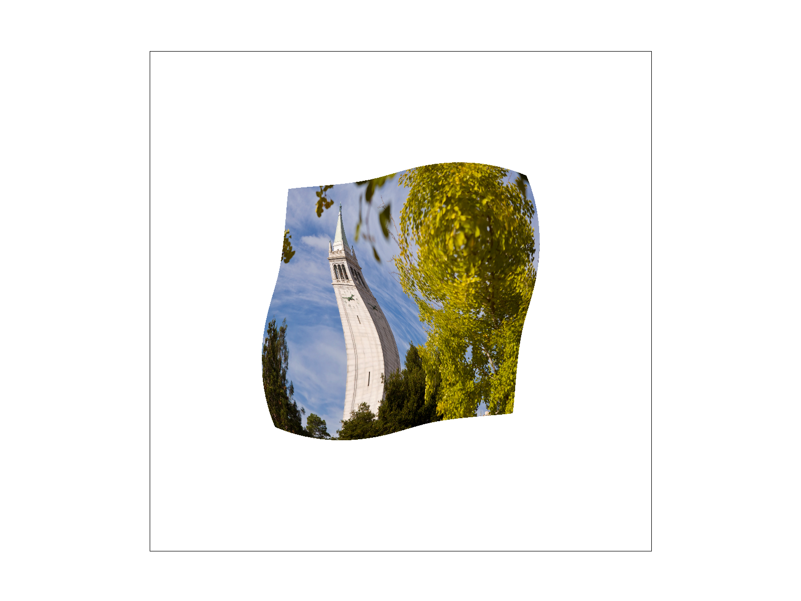
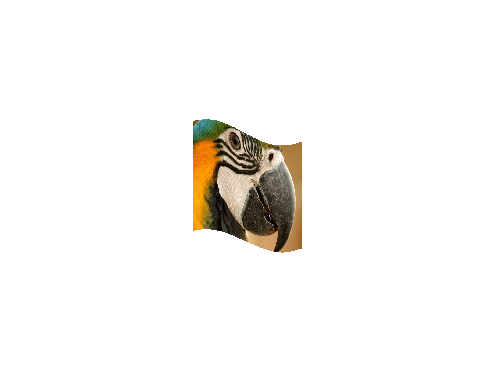
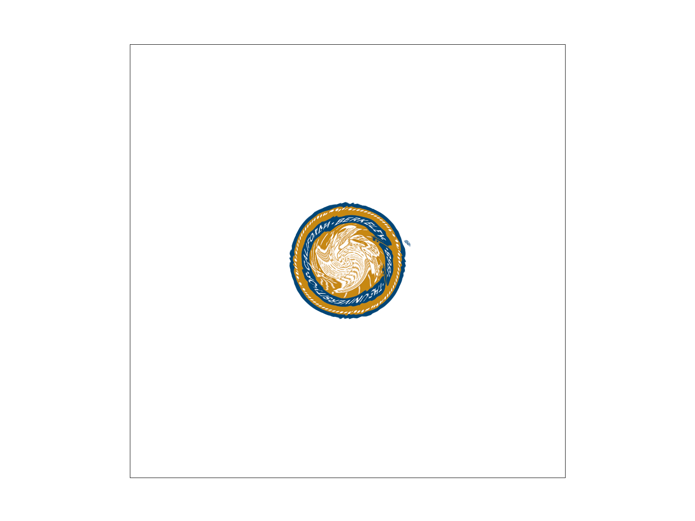
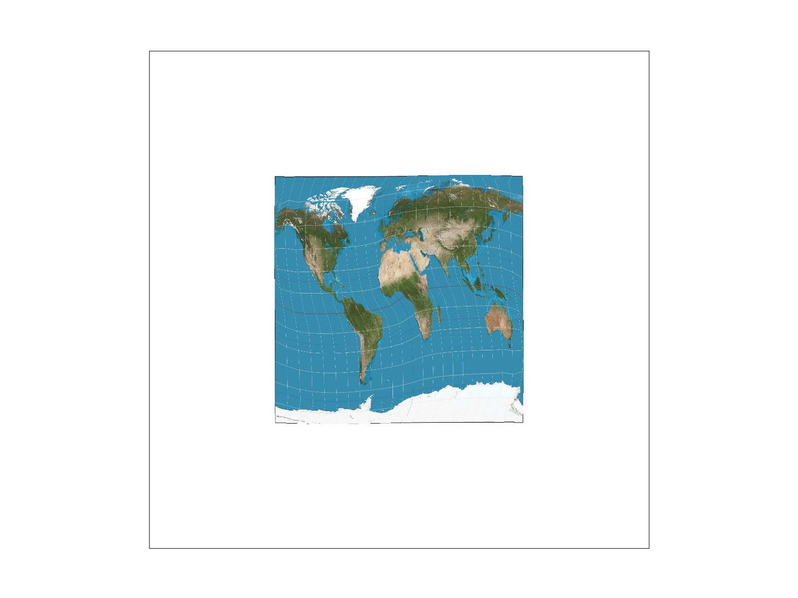
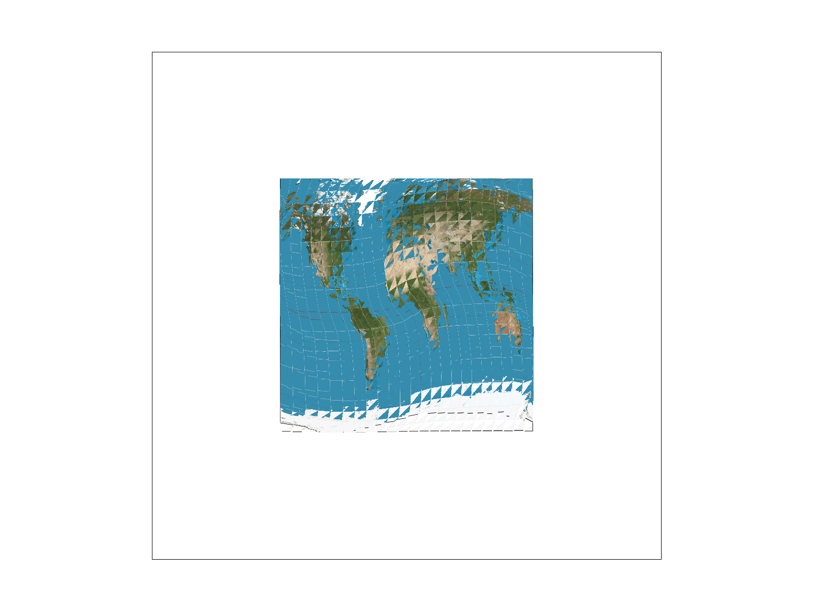
While implementing texture mapping, some triangles rendered as white or magenta due to inconsistent vertex winding orders failing our point-in-triangle test. We fixed this by modifying the inside check to accept edge values that are either all positive or all negative. We also corrected our texture coordinate math to prevent the textures from rendering upside down.
Now that we have pixel sampling working for texture maps, we then implemented mipmapping and level sampling to improve the visual quality when textures are minified. Mipmapping helps with anti-aliasing by matching the size of triangles with the resolution (or level) of the texture map. With a pre-computed set of texture maps at different resolutions, we can interpolate between different levels to get the appropriate level of detail for each triangle! Level sampling selects the appropriate mipmap level based on how quickly UV coordinates change across neighbouring screen pixels. This prevents aliasing when textures are minified.
First, we computed the mip level using UV differentials (p_dx_uv, p_dy_uv), scaled by texture width and height. Then, to calculate the level
by finding the largest 'stretch' in the UV frame from a change in the XY frame in any direction:
level = log2(max(|dudx|, |dvdy|))
We clamped this level value to the valid mipmap range, and used it to fetch the appropriate mipmap textures.
Nearst pixel sampling method transforms your XY frame pixel in the XY frame into the UV frame, and directly uses it to fetch the corresponding texel colour that this UV coordinate lands on in the mipmap texture.
Since each mipmap texture was compressed by 'blurring' the original resolution texture, to take into account the UV coordinate's proximity to its surrounding texels
While we can now sample from each level mipmaps, we also need to handle cases where the texture level is not a perfect integer. For those cases, the actual texture resolution will be between two mipmap levels. Thus, we need to interpolate between the two texel values corresponding to each of those levels. We will use another bilinear interpolation between the two texel colours, but now rather than using proximities to nearby pixels, we interpolate using the proximity between the upper and lower texture levels.
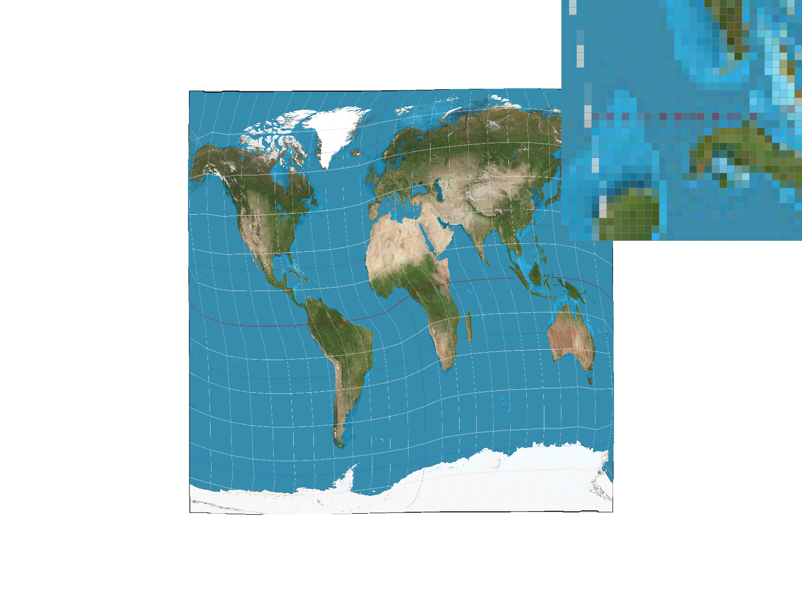
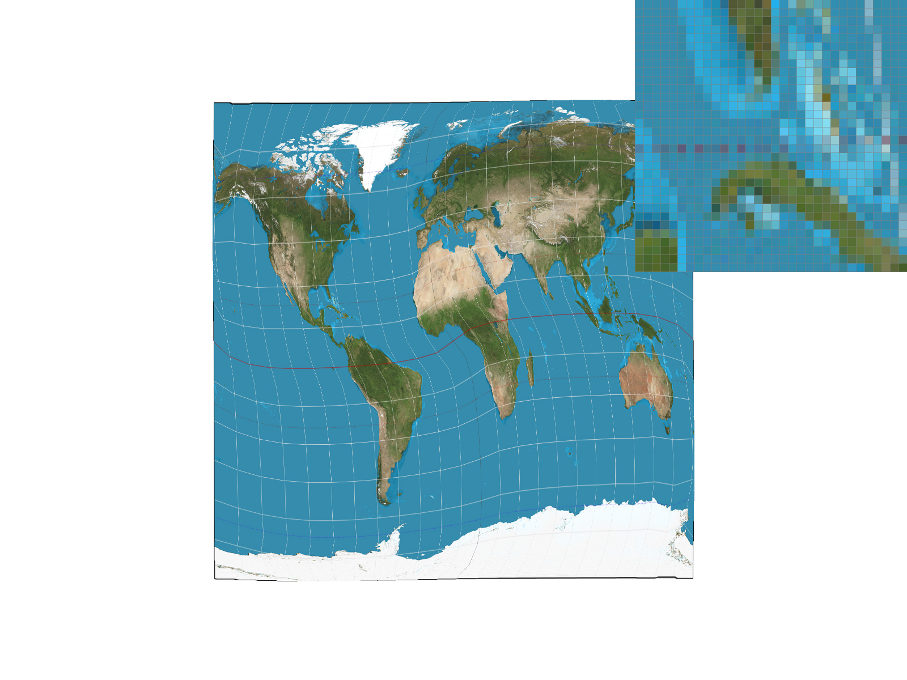
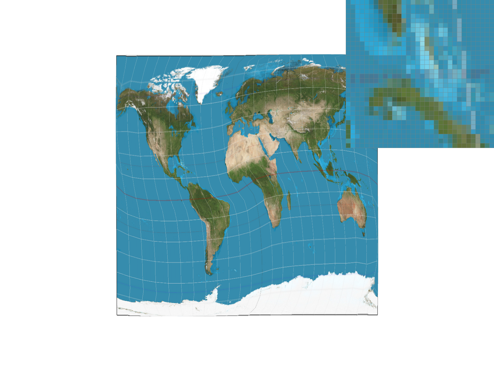
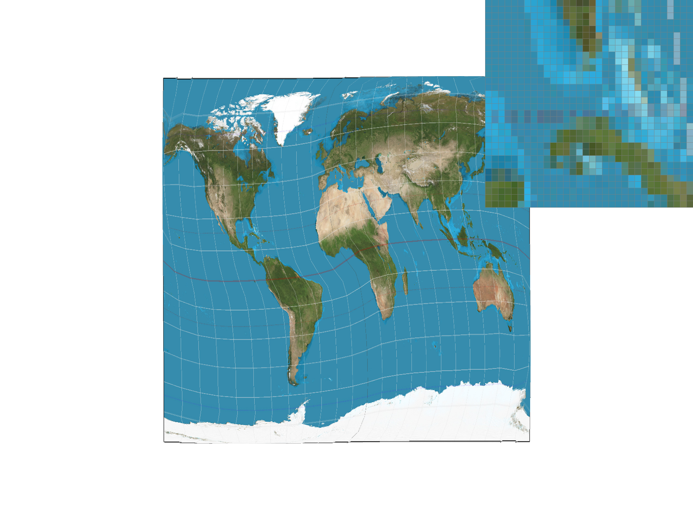
Overall, bilinear pixel sampling combined with linear mip level sampling gives the best visual quality with reasonable performance.